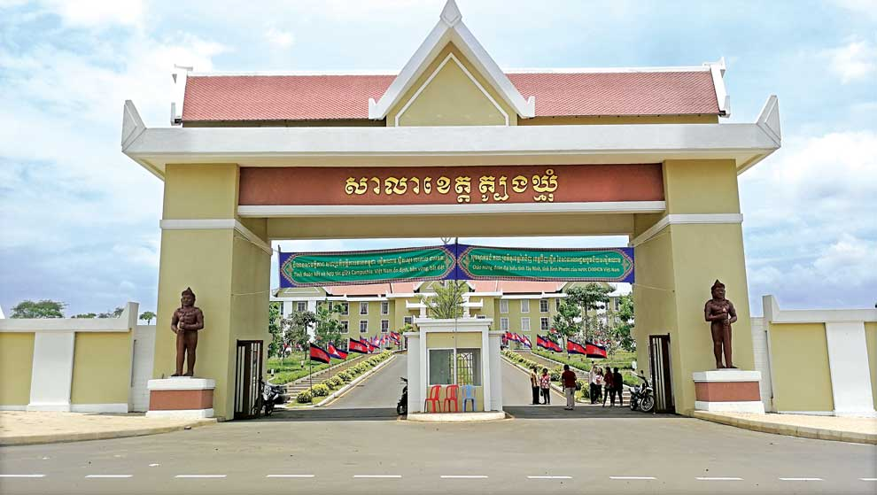
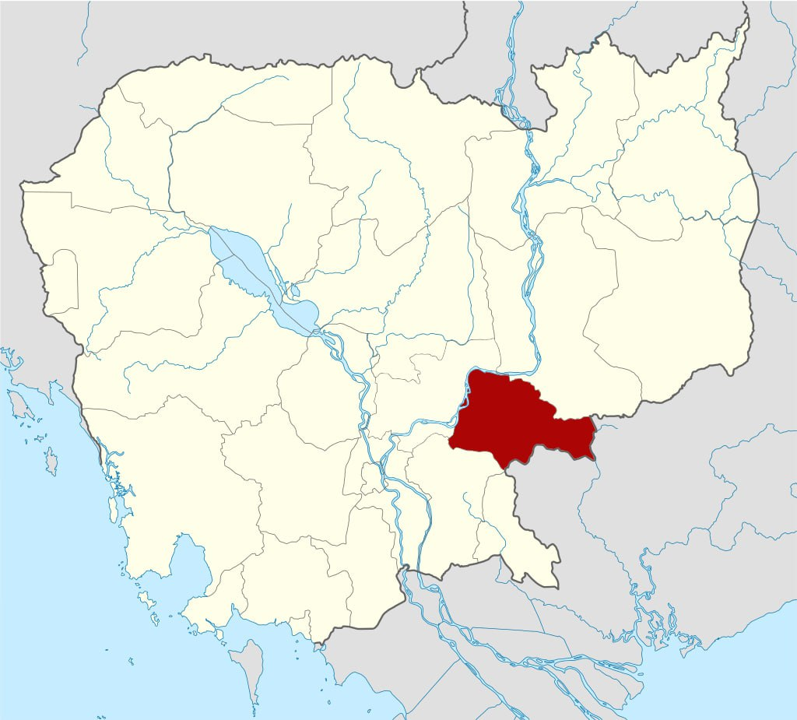

|
|
ត្បូងឃ្មុំ (អ.ស.អ.: [tɓouŋ khmum]) គឺជាខេត្តនៃកម្ពុជាស្ថិតនៅវាលទំនាបកណ្ដាលនៃទន្លេមេគង្គ។ មានព្រំប្រទល់ជាប់ខេត្តកំពង់ចាមនៅខាងលិច ក្រចេះនៅខាងជើង ព្រៃវែងនៅខាងត្បូង និង មានព្រំដែនអន្តរជាតិរួមជាមួយវៀតណាមនៅខាងកើត។ ទីរួមខេត្តហើយក៏ជាទីក្រុងធំបំផុតគឺសួង។
រដ្ឋបាល
ខេត្តត្បូងឃ្មុំ ជាដែនរដ្ឋបាលស្ថិតនៅខាងកើតទន្លេមេគង្គ ប្រទេសកម្ពុជា ត្រូវបានកាត់ចេញពីដែនរដ្ឋបាលរបស់ ខេត្តកំពង់ចាម ដែលមាន ស្រុក ឃុំ និង ភូមិ÷
ទីតាំងភូមិសាស្រ្តមានផ្ទៃក្រឡាសរុប ៥២៥០ គម2 (២០៣០ ម៉ាយ ការ) អត្រាប្រជាជនចំនួនប្រជាជនសរុបគឺ ៧៧៦,៨៤១ សេដ្ឋកិច្ចផ្សារ៖ កំពង់ចក កំពង់ត្រាច ក្របៅ ជីភូ ថ្នល់បែក បាវិត ប្រសូត្រ ពោធិ៍តាហោ ព្រីសស្ទិក រមាសហែក រំដួល វាលយន្ត ស្វាយជ្រំ ស្វាយទាប អន្តរជាតិបាវិត អូសំដី តំបន់ទេសចរណ៍
១/ទឹកធ្លាក់ហោង |
Tbong Kmoum Provinceខេត្តត្បូងឃ្មុំ  អភិបាល ប្រាជ្ញ ចន្ទ |
||||||||||||||||||||||||||||||||||